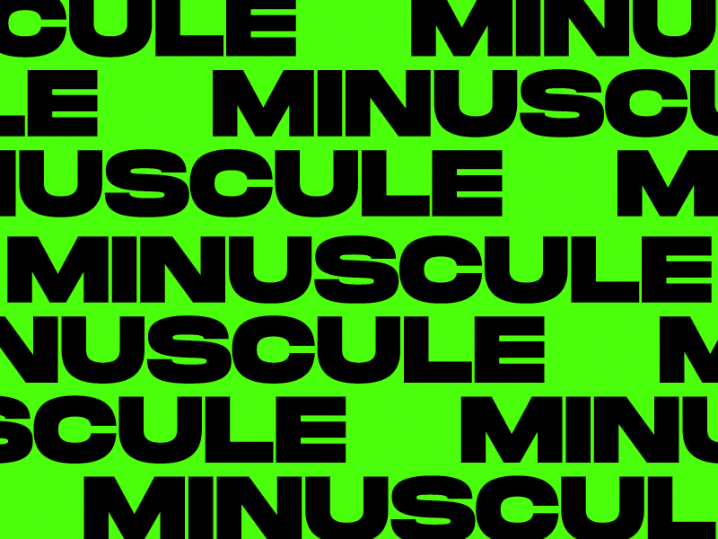
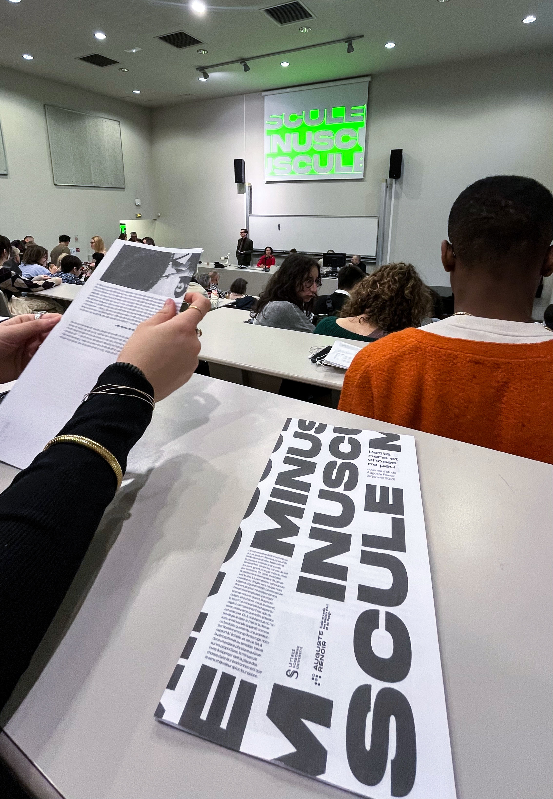

La JDE 2026 était une journée d’études organisée par l’ELMAND Auguste Renoir et l’Université
Sorbonne. Cette édition 2026 se consacrait sur la notion de minuscule.
Conception du dépliant-programme en A3 de l’événement et création d’un GIF de présentation.


